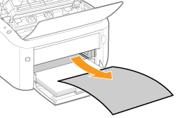

|
Antes de retirar papel atascado, consulte "Atención (atascos de papel)".
|
Cuando se produzca un atasco de papel, aparecerá un mensaje en la Ventana de estado de impresora.
 Si no aparece la Ventana de estado de impresora Si no aparece la Ventana de estado de impresora |
 "
"Procedimiento para eliminar atascos de papel
Asegúrese de llevar a cabo el siguiente procedimiento para retirar el papel atascado.
1
Sujetando la abertura (A) del lado derecho, abra la tapa superior.
 |
No retire el papel atascado a la fuerza aunque lo esté viendo. En su lugar, extráigalo siguiendo el procedimiento descrito.
|

2
Extraiga el cartucho de tóner.
Introduzca inmediatamente el cartucho de tóner extraído en la bolsa protectora original o envuélvalo en un paño grueso.
|
|
Para obtener una información detallada sobre la manipulación del cartucho de tóner, consulte "Atención (cartucho de tóner)".
|

3
Retire cualquier papel atascado.
Si el papel está atascado en el área de salida o en el interior de la impresora
|
(1)
|
Sujete ambos lados del papel y, a continuación, tire con cuidado de él hacia abajo.
|
|
(2)
|
Retire el papel tirando de él despacio.
|


Si el papel está atascado en el origen del papel
Retire el papel tirando de él despacio.

4
Instale el cartucho de tóner.
Empuje el cartucho de tóner firmemente al interior de la impresora hasta que toque la parte posterior de la impresora mientras alinea (A) en los dos lados del cartucho de tóner con las guías del cartucho de tóner del interior de la impresora.
5
Cierre la tapa superior.
|
→
|
El mensaje que indica un atasco de papel desaparecerá y la impresora estará lista para imprimir.
|
|
Si no puede cerrar la tapa superior Asegúrese de que el cartucho de tóner está instalado apropiadamente en la impresora. No intente cerrar la tapa superior a la fuerza, ya que podría dañar la impresora.
|